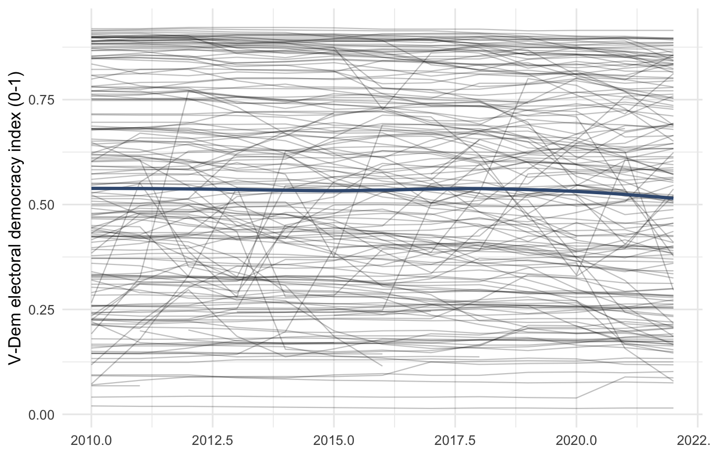
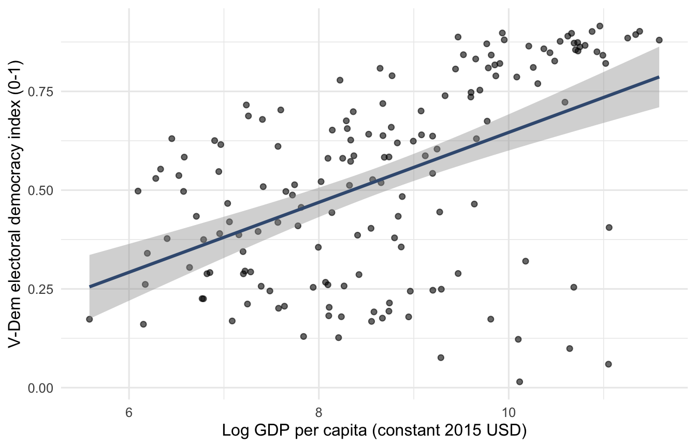
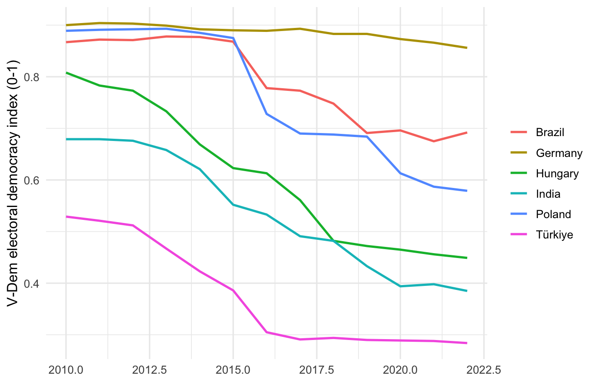
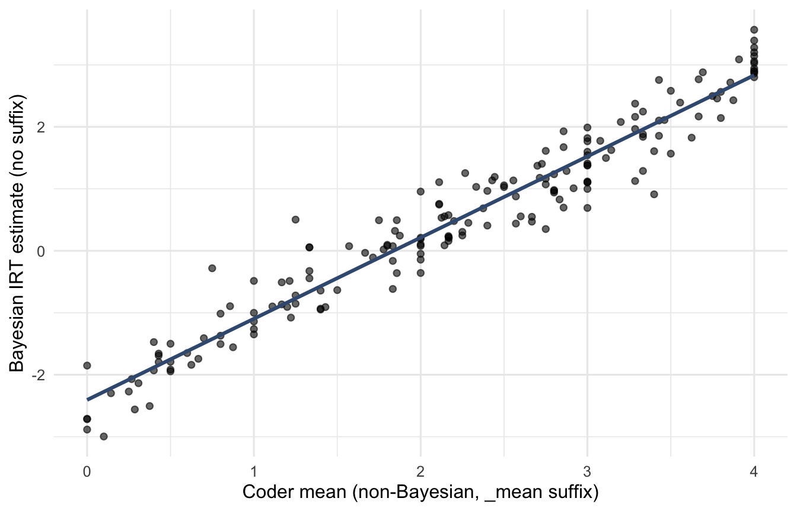

library(dplyr)
library(tidyr)
library(ggplot2)
library(countrycode)
library(fixest)
library(modelsummary)Merging Datasets: V-Dem and World Bank
Bachelor Project 2025-2026, Group 16
1 Why merge datasets at all
Almost no thesis in digital governance runs on a single source. Your focal predictor lives in one dataset (a democracy index, a freedom-of-expression score, a shutdown tracker), your outcome may live in another, and your control variables almost certainly live somewhere else (GDP per capita, internet penetration, urbanisation, education). Merging is the unglamorous step that decides whether the rest of the analysis is even possible.
This walkthrough takes the two most common sources in this group’s project topics, the Varieties of Democracy (V-Dem) dataset and the World Bank’s World Development Indicators (WDI), pulls them through R, and shows two end states:
- A country-year panel ready to feed straight into the panel data walkthrough.
- A cross-sectional snapshot (one year, or a multi-year average) ready to feed into the OLS walkthrough.
The technical move is small (a dplyr::left_join on country code and year). The judgement calls around it (which country code, which year range, what to do with missingness) are where most students lose time. Those are what we focus on.
2 Setting up
For the live data calls in this walkthrough you also need vdemdata and WDI. Install them once:
# CRAN packages
install.packages(c("dplyr","tidyr","ggplot2","WDI","countrycode",
"fixest","modelsummary","devtools"))
# V-Dem package lives on GitHub, not CRAN
devtools::install_github("vdeminstitute/vdemdata")
Note
About the cached data files. The V-Dem dataset is over 4,600 columns wide, and the World Bank API can be slow or flaky on a given afternoon. So this page renders from two small cache files that ship with the walkthrough (data/vdem_slim.rds and data/wdi_raw.rds). The code chunks that build those caches from scratch are shown with eval: false so you can see exactly how they were made; rerun them on your own machine when you want a fresh pull.
3 What V-Dem looks like
vdemdata::vdem is one very wide data frame: one row per country-year, from 1789 to 2023, and over 4,000 columns of indicators and codings. You will use a handful of those columns; the rest you can ignore.
library(vdemdata)
data("vdem", package = "vdemdata")
dim(vdem) #> 27734 4607
vdem_slim <- vdem |>
select(country_name,
iso3c = country_text_id,
year,
polyarchy = v2x_polyarchy,
libdem = v2x_libdem,
free_expr = v2x_freexp_altinf) |>
filter(year >= 2010, year <= 2022)
saveRDS(vdem_slim, "data/vdem_slim.rds")The columns you most often want as keys:
country_name: the human-readable country name. Useful for plotting and sanity-checking, not for merging.country_text_id: the ISO 3166-1 alpha-3 code (NLD, IND, BRA, …). This is what you merge on.year: integer calendar year.
The most commonly used substantive indicators in this project topic are v2x_polyarchy (electoral democracy, 0-1), v2x_libdem (liberal democracy), v2x_freexp_altinf (freedom of expression and alternative sources of information), and v2x_frassoc_thick (freedom of association). Each is documented in the V-Dem codebook; cite the codebook version in your methods section.
Pick a slim subset early. A 4,607-column data frame is unmanageable and slow. Loading the cached version that comes with this walkthrough:
vdem_slim <- readRDS("data/vdem_slim.rds")
glimpse(vdem_slim)
#> Rows: 2,326
#> Columns: 13
#> $ country_name <chr> "Mexico", "Mexico", "Mexico", "Mexico", "Mexico", "Mexic…
#> $ iso3c <chr> "MEX", "MEX", "MEX", "MEX", "MEX", "MEX", "MEX", "MEX", …
#> $ year <dbl> 2010, 2011, 2012, 2013, 2014, 2015, 2016, 2017, 2018, 20…
#> $ polyarchy <dbl> 0.651, 0.652, 0.649, 0.619, 0.621, 0.636, 0.638, 0.636, …
#> $ libdem <dbl> 0.467, 0.467, 0.461, 0.422, 0.423, 0.430, 0.431, 0.443, …
#> $ free_expr <dbl> 0.786, 0.788, 0.798, 0.764, 0.770, 0.798, 0.801, 0.777, …
#> $ me_print <dbl> 0.537, 0.500, 0.536, 0.981, 0.847, 1.111, 1.111, 0.758, …
#> $ me_inet <dbl> 1.464, 1.464, 1.200, 1.186, 1.186, 1.186, 1.186, 1.375, …
#> $ me_harass <dbl> 0.250, 0.170, 0.234, 0.222, 0.320, 0.062, 0.063, -0.049,…
#> $ me_selfcen <dbl> 1.246, 1.246, 1.329, 0.678, 0.678, 1.165, 1.165, 1.094, …
#> $ me_bias <dbl> 1.544, 1.510, 1.771, 2.045, 2.416, 2.416, 2.416, 1.546, …
#> $ me_print_mean <dbl> 2.214, 2.214, 2.214, 2.273, 2.182, 2.444, 2.444, 2.000, …
#> $ me_print_ord <dbl> 3, 3, 3, 3, 3, 3, 3, 3, 3, 2, 2, 2, 2, 3, 3, 3, 3, 3, 3,…After this step vdem_slim is one row per country-year, with the three headline indices, five media-freedom components, two variant versions of one component, and the keys.
Going further with V-Dem. Two questions come up often enough to mention here, but most students do not need them on a first pass:
- Are you trying to combine several V-Dem indicators into a single composite?
- Are you wondering about the Bayesian estimates and their raw
_mean,_ord, and_ospvariants?
If yes to either, see the collapsible appendix at the end of this page. If not, skip it and continue with the World Bank data.
4 What World Bank data look like
The WDI package wraps the World Bank’s open API. You pass it indicator codes (browsable at data.worldbank.org) and a date range, and it returns a long data frame with one row per country-year per query.
library(WDI)
# Fetch each indicator separately. Doing them one at a time is slower but
# far more robust: a 400/timeout on one call does not kill the whole pull,
# and you can retry just the indicator that failed.
gdp <- WDI(country = "all", indicator = c(gdp_pc = "NY.GDP.PCAP.KD"), start = 2010, end = 2022)
net <- WDI(country = "all", indicator = c(internet_pen = "IT.NET.USER.ZS"), start = 2010, end = 2022)
urb <- WDI(country = "all", indicator = c(urban_pct = "SP.URB.TOTL.IN.ZS"), start = 2010, end = 2022)
# WDI returns aggregates (World, Sub-Saharan Africa, OECD members) alongside
# individual countries. They have iso3c = NA. Drop them before joining.
clean <- function(df, val) df |> filter(!is.na(iso3c), iso3c != "") |>
select(country, iso2c, iso3c, year, !!sym(val))
wdi_raw <- clean(gdp, "gdp_pc") |>
inner_join(clean(net, "internet_pen") |> select(iso3c, year, internet_pen), by = c("iso3c","year")) |>
inner_join(clean(urb, "urban_pct") |> select(iso3c, year, urban_pct), by = c("iso3c","year"))
saveRDS(wdi_raw, "data/wdi_raw.rds")Two practical points worth pulling out:
- The
c(name = "CODE")syntax renames each indicator on the fly. Without it, your column would be calledNY.GDP.PCAP.KD, which is unreadable in a regression table. - Fetch indicators one at a time. The World Bank API occasionally rate-limits or returns 400s on individual indicators; a per-indicator pull lets you retry just the failure instead of redoing the whole thing.
Loading the cached version:
wdi_raw <- readRDS("data/wdi_raw.rds")
glimpse(wdi_raw)
#> Rows: 3,393
#> Columns: 7
#> $ country <chr> "Africa Eastern and Southern", "Africa Eastern and Southe…
#> $ iso2c <chr> "ZH", "ZH", "ZH", "ZH", "ZH", "ZH", "ZH", "ZH", "ZH", "ZH…
#> $ iso3c <chr> "AFE", "AFE", "AFE", "AFE", "AFE", "AFE", "AFE", "AFE", "…
#> $ year <int> 2022, 2021, 2020, 2019, 2018, 2017, 2016, 2015, 2014, 201…
#> $ gdp_pc <dbl> 1440.430, 1425.209, 1399.398, 1479.372, 1489.942, 1490.91…
#> $ internet_pen <dbl> 26.8, 25.0, 23.5, 21.6, 19.6, 17.3, 16.3, 14.3, 12.1, 10.…
#> $ urban_pct <dbl> 37.36058, 36.90854, 36.48832, 36.09733, 35.71472, 35.2829…One small cleaning step before merging: GDP per capita is right-skewed across countries (a few very rich economies, a long tail of much poorer ones), so we log it. This is the standard transformation in cross-country regressions; always note transformations explicitly in your thesis.
wdi_clean <- wdi_raw |>
mutate(gdp_pc_log = log(gdp_pc)) |>
select(iso3c, year, gdp_pc_log, internet_pen, urban_pct)
glimpse(wdi_clean)
#> Rows: 3,393
#> Columns: 5
#> $ iso3c <chr> "AFE", "AFE", "AFE", "AFE", "AFE", "AFE", "AFE", "AFE", "…
#> $ year <int> 2022, 2021, 2020, 2019, 2018, 2017, 2016, 2015, 2014, 201…
#> $ gdp_pc_log <dbl> 7.272697, 7.262074, 7.243798, 7.299373, 7.306493, 7.30714…
#> $ internet_pen <dbl> 26.8, 25.0, 23.5, 21.6, 19.6, 17.3, 16.3, 14.3, 12.1, 10.…
#> $ urban_pct <dbl> 37.36058, 36.90854, 36.48832, 36.09733, 35.71472, 35.2829…5 The merge
V-Dem has iso3c (renamed from country_text_id) and year. WDI has iso3c and year. Merging is one call.
panel <- vdem_slim |>
left_join(wdi_clean, by = c("iso3c", "year"))
glimpse(panel)
#> Rows: 2,326
#> Columns: 16
#> $ country_name <chr> "Mexico", "Mexico", "Mexico", "Mexico", "Mexico", "Mexic…
#> $ iso3c <chr> "MEX", "MEX", "MEX", "MEX", "MEX", "MEX", "MEX", "MEX", …
#> $ year <dbl> 2010, 2011, 2012, 2013, 2014, 2015, 2016, 2017, 2018, 20…
#> $ polyarchy <dbl> 0.651, 0.652, 0.649, 0.619, 0.621, 0.636, 0.638, 0.636, …
#> $ libdem <dbl> 0.467, 0.467, 0.461, 0.422, 0.423, 0.430, 0.431, 0.443, …
#> $ free_expr <dbl> 0.786, 0.788, 0.798, 0.764, 0.770, 0.798, 0.801, 0.777, …
#> $ me_print <dbl> 0.537, 0.500, 0.536, 0.981, 0.847, 1.111, 1.111, 0.758, …
#> $ me_inet <dbl> 1.464, 1.464, 1.200, 1.186, 1.186, 1.186, 1.186, 1.375, …
#> $ me_harass <dbl> 0.250, 0.170, 0.234, 0.222, 0.320, 0.062, 0.063, -0.049,…
#> $ me_selfcen <dbl> 1.246, 1.246, 1.329, 0.678, 0.678, 1.165, 1.165, 1.094, …
#> $ me_bias <dbl> 1.544, 1.510, 1.771, 2.045, 2.416, 2.416, 2.416, 1.546, …
#> $ me_print_mean <dbl> 2.214, 2.214, 2.214, 2.273, 2.182, 2.444, 2.444, 2.000, …
#> $ me_print_ord <dbl> 3, 3, 3, 3, 3, 3, 3, 3, 3, 2, 2, 2, 2, 3, 3, 3, 3, 3, 3,…
#> $ gdp_pc_log <dbl> 9.147301, 9.167008, 9.188352, 9.183864, 9.196493, 9.2124…
#> $ internet_pen <dbl> 31.05000, 37.17630, 39.75000, 43.46000, 44.38570, 57.431…
#> $ urban_pct <dbl> 76.52444, 76.56678, 76.65852, 76.79558, 76.97414, 77.190…left_join keeps every V-Dem row and brings in matching WDI columns; rows with no WDI match get NA in those columns. The alternatives:
inner_joinkeeps only country-years present in both. Cleanest, smallest, what you usually want once you are ready to estimate.full_joinkeeps every row from either. Useful for diagnosing what is missing where.right_joinisleft_joinwith the arguments flipped; avoid it for readability.
Which you choose depends on what counts as the “spine” of your analysis. For a democracy-focused project the V-Dem coverage is usually the spine, so left_join from V-Dem is the right default.
5.1 Always inspect the merge before trusting it
A merge that runs without error is not a merge that worked. Check three things every time.
# 1. How many V-Dem rows failed to find a WDI match?
panel |>
summarise(
n_total = n(),
n_missing_gdp = sum(is.na(gdp_pc_log)),
n_missing_internet = sum(is.na(internet_pen)),
n_missing_urban = sum(is.na(urban_pct))
)
# 2. Which countries are most affected?
panel |>
group_by(country_name) |>
summarise(missing_gdp = sum(is.na(gdp_pc_log)),
n = n()) |>
filter(missing_gdp > 0) |>
arrange(desc(missing_gdp)) |>
head(10)
# 3. Spot-check a single country end-to-end
panel |>
filter(country_name == "Netherlands") |>
select(year, polyarchy, gdp_pc_log, internet_pen, urban_pct)If a country you care about is mostly NA, find out why before estimating anything. Common causes: the country is too small for WDI coverage of that indicator, the country name in V-Dem differs from the World Bank’s expectation (rare for ISO codes, common for names), or the indicator was discontinued partway through the period.
5.2 What the merged panel should look like
One row per country-year. Country and year jointly identify the row. All substantive columns are numeric. No duplicate country_name_x / country_name_y columns (which appear when both sides bring the same column and you have not picked one). If you see duplicates, drop them before moving on.
panel |>
count(iso3c, year) |>
filter(n > 1) # should return zero rowsIf that returns any rows you have a duplication problem; fix it before estimating.
6 When country codes do not line up
ISO3 codes are the cleanest join key in cross-country work, but you will run into datasets that only ship country names. The countrycode package converts between conventions.
# Convert names to ISO3
countrycode(c("South Korea", "Czechia", "Türkiye"),
origin = "country.name", destination = "iso3c")
#> [1] "KOR" "CZE" "TUR"
# Convert ISO3 to a common name
countrycode(c("PRK", "TUR", "CIV"),
origin = "iso3c", destination = "country.name")
#> [1] "North Korea" "Turkey" "Côte d’Ivoire"For any non-ISO source, add an iso3c column with countrycode() before the join. Resist the temptation to merge on names directly; small spelling differences (“Korea, Rep.” vs “South Korea”, “Cote d’Ivoire” vs “Côte d’Ivoire”) will silently drop rows.
7 Building the panel-ready dataset
Drop rows with any missing key variables, keep a slim set of countries that have coverage on everything, and you have a panel ready for the panel walkthrough.
panel_ready <- panel |>
filter(!is.na(polyarchy),
!is.na(gdp_pc_log),
!is.na(internet_pen),
!is.na(urban_pct)) |>
arrange(iso3c, year)
nrow(panel_ready)
#> [1] 2176
length(unique(panel_ready$iso3c))
#> [1] 174
range(panel_ready$year)
#> [1] 2010 2022The shape: one row per country-year, two key columns (iso3c, year), one outcome (polyarchy), three controls (gdp_pc_log, internet_pen, urban_pct), plus country_name for plotting. This is exactly the structure the panel walkthrough assumes.
A quick visual check before estimation:
ggplot(panel_ready, aes(year, polyarchy, group = iso3c)) +
geom_line(alpha = 0.25, linewidth = 0.4) +
geom_smooth(aes(group = 1), se = FALSE, method = "loess", colour = "#3d5a80") +
labs(x = NULL, y = "V-Dem electoral democracy index (0-1)") +
theme_minimal(base_size = 12)
The grey lines are individual country trajectories; the blue line is the global average. The mild downward drift is the so-called democratic recession you have probably seen referenced in the literature.
A panel fixed-effects regression on this dataset is one line, just to confirm the shape works:
m_panel <- feols(polyarchy ~ gdp_pc_log + internet_pen + urban_pct |
iso3c + year,
data = panel_ready,
cluster = ~ iso3c)
summary(m_panel)
#> OLS estimation, Dep. Var.: polyarchy
#> Observations: 2,176
#> Fixed-effects: iso3c: 174, year: 13
#> Standard-errors: Clustered (iso3c)
#> Estimate Std. Error t value Pr(>|t|)
#> gdp_pc_log 0.022120 0.029796 0.742387 0.45886
#> internet_pen -0.000125 0.000292 -0.427582 0.66949
#> urban_pct -0.002130 0.001914 -1.112682 0.26739
#> ---
#> Signif. codes: 0 '***' 0.001 '**' 0.01 '*' 0.05 '.' 0.1 ' ' 1
#> RMSE: 0.053257 Adj. R2: 0.951449
#> Within R2: 0.005826Interpretation belongs in the panel walkthrough; this is just to show that the merged data are in the right shape for it.
8 Building the OLS-ready cross-section
For an OLS specification you need one row per country, not one row per country-year. There are two defensible ways to get there.
8.1 Option A: one specific year
Pick the most recent year with good coverage and use that as a snapshot.
ols_snapshot <- panel_ready |>
filter(year == 2020) |>
select(country_name, iso3c, polyarchy, gdp_pc_log, internet_pen, urban_pct)
nrow(ols_snapshot)
#> [1] 164
head(ols_snapshot)The shape: one row per country, no year column, the same outcome and controls. This is exactly what lm() expects in the OLS walkthrough. Use a snapshot when the question is genuinely cross-sectional (“which countries are more democratic, in this moment?”).
8.2 Option B: multi-year averages
Average each variable over a window. More robust to year-specific noise, especially for the outcome.
ols_average <- panel_ready |>
filter(year >= 2018, year <= 2022) |>
group_by(country_name, iso3c) |>
summarise(
polyarchy = mean(polyarchy, na.rm = TRUE),
gdp_pc_log = mean(gdp_pc_log, na.rm = TRUE),
internet_pen = mean(internet_pen, na.rm = TRUE),
urban_pct = mean(urban_pct, na.rm = TRUE),
n_years = n(),
.groups = "drop"
) |>
filter(n_years >= 4) # require at least 4 of the 5 years present
nrow(ols_average)
#> [1] 162
head(ols_average)The n_years column lets you drop countries with patchy coverage. The shape is the same as Option A: one row per country, no time dimension. Pick A or B depending on whether you want a single year as substantively meaningful or a smoother estimate.
A quick OLS, just to confirm the shape works:
m_ols <- lm(polyarchy ~ gdp_pc_log + internet_pen + urban_pct,
data = ols_average)
summary(m_ols)
#>
#> Call:
#> lm(formula = polyarchy ~ gdp_pc_log + internet_pen + urban_pct,
#> data = ols_average)
#>
#> Residuals:
#> Min 1Q Median 3Q Max
#> -0.67664 -0.13271 0.04154 0.15127 0.34900
#>
#> Coefficients:
#> Estimate Std. Error t value Pr(>|t|)
#> (Intercept) -0.520498 0.156888 -3.318 0.00113 **
#> gdp_pc_log 0.150987 0.026915 5.610 8.85e-08 ***
#> internet_pen -0.002863 0.001533 -1.868 0.06365 .
#> urban_pct -0.001288 0.001214 -1.061 0.29041
#> ---
#> Signif. codes: 0 '***' 0.001 '**' 0.01 '*' 0.05 '.' 0.1 ' ' 1
#>
#> Residual standard error: 0.2125 on 158 degrees of freedom
#> Multiple R-squared: 0.2853, Adjusted R-squared: 0.2717
#> F-statistic: 21.02 on 3 and 158 DF, p-value: 1.64e-11Coefficients are positive on all three controls, which is what you would expect in a cross-section: richer, more connected, more urban countries score higher on electoral democracy. Interpretation belongs in the OLS walkthrough.
9 Visualising the merged data
Two visualisations earn their place in almost every thesis that uses merged country data.
9.1 A scatterplot of the cross-section
The textbook democracy-development scatterplot.
ggplot(ols_average, aes(gdp_pc_log, polyarchy)) +
geom_point(alpha = 0.6, size = 1.6) +
geom_smooth(method = "lm", se = TRUE, colour = "#3d5a80") +
labs(x = "Log GDP per capita (constant 2015 USD)",
y = "V-Dem electoral democracy index (0-1)") +
theme_minimal(base_size = 12)
Reach for this kind of plot first. It shows the headline relationship, communicates the sample size visually (one dot per country), and primes the reader for the regression that follows.
9.2 A panel plot of selected countries
For the panel side, show a small set of substantively interesting trajectories rather than all lines at once.
highlight <- c("HUN", "POL", "IND", "BRA", "TUR", "DEU")
panel_ready |>
filter(iso3c %in% highlight) |>
ggplot(aes(year, polyarchy, colour = country_name)) +
geom_line(linewidth = 0.9) +
labs(x = NULL, y = "V-Dem electoral democracy index (0-1)",
colour = NULL) +
theme_minimal(base_size = 12)
Six lines is the upper limit before the reader stops being able to track individual countries. If you need more, facet by region instead.
10 Common pitfalls
- Merging on country name. Names are messy (“Korea, Republic of” vs “South Korea”, “Iran, Islamic Republic of” vs “Iran”). Convert to ISO3 with
countrycode()and merge on the codes. Treat any merge on names as a temporary diagnostic only. - Forgetting to drop WDI aggregates. WDI returns “World”, “Euro area”, “Sub-Saharan Africa”, and dozens of other groupings alongside countries. They have
iso3c = NA. Drop them before merging or you will end up with country-years that are aggregates of country-years. - Silent year mismatches. V-Dem ends in 2023; some WDI indicators lag by one or two years. Always check the year range of every indicator after merging.
- Many-to-many joins. If either side has duplicate keys (e.g., a regional sub-unit row sneaking in alongside the national row), the join will multiply rows. The
count(iso3c, year)check above catches this; run it every time. - Confusing cross-section with panel. A “one row per country” dataset is for OLS. A “one row per country-year” dataset is for panel methods. Mixing them up is the most common cause of regression results that look weirdly weak or weirdly strong.
- Ignoring missingness patterns. Listwise deletion (the default in
lm()andfeols()) drops any row withNAin any used variable. A control variable with 30 percent missingness can quietly cut your sample in half. Always reportnrow()of the data actually fed to the model. - Treating WDI growth-rate indicators like levels. Many WDI codes (anything ending in
.KD.ZG,.ZS,.PC) are already percentages or rates. Read the indicator metadata before transforming. - No version pinning. Both V-Dem and WDI release updated data periodically. Note the V-Dem version (e.g., v14) and the date of your WDI pull in your methods section so the analysis can be replicated.
11 Where to read more
- V-Dem codebook (v14 or whatever version your
vdemdatainstallation reports): definitions for everyv2x_*indicator, with measurement detail and citation guidance. - World Bank data catalogue at
data.worldbank.org: searchable indicator browser. Always read the “Definitions and source” tab. countrycodepackage vignette by Vincent Arel-Bundock: the canonical reference for cross-source country identifiers.- For a deeper treatment of merging conventions in R, see the “Relational data” chapter of Wickham, Çetinkaya-Rundel, and Grolemund, R for Data Science (2nd edition).
- Once your merged data are ready, continue with the OLS walkthrough for a cross-section or the panel walkthrough for a country-year panel.
12 Appendix: combining V-Dem variables, and Bayesian vs raw values
NoteOpen appendix
12.1 Combining V-Dem variables: when it works, when it does not
A common impulse is to take two or three V-Dem indicators and average them into a single “more comprehensive” variable. Sometimes that is the right move. Often it is not. Three rules.
12.1.1 Rule 1: do not combine indices that already contain each other
V-Dem’s aggregated indices (v2x_polyarchy, v2x_libdem, v2x_partipdem, etc.) are constructed from each other. The liberal democracy index is, by construction, a function of the electoral democracy index plus a liberal component. Combining them double-counts the same underlying information.
cor(vdem_slim$polyarchy, vdem_slim$libdem, use = "complete.obs")
#> [1] 0.977314A correlation of around 0.98 is not a coincidence; it is the same thing measured twice. If you regress on the average of polyarchy and libdem, you have done nothing different from regressing on either one alone. Pick the index whose conceptual definition matches your research question and use it directly. Cite the V-Dem codebook for the definition.
12.1.2 Rule 2: if you build your own scale, check that it is one-dimensional
If you genuinely want a composite (say, a “media freedom” scale drawn from several V-Dem media indicators), you have to demonstrate that the components measure the same underlying construct. The standard check is Cronbach’s alpha, which should be at least 0.7 for a serious scale; higher is better, but anything above about 0.95 also suggests that the indicators may be near-redundant.
media_items <- c("me_print", "me_inet", "me_harass", "me_selfcen", "me_bias")
media_mat <- vdem_slim |>
filter(year == 2020) |>
select(all_of(media_items)) |>
na.omit()
# Correlations among components
round(cor(media_mat), 2)
#> me_print me_inet me_harass me_selfcen me_bias
#> me_print 1.00 0.81 0.87 0.84 0.81
#> me_inet 0.81 1.00 0.79 0.74 0.76
#> me_harass 0.87 0.79 1.00 0.84 0.83
#> me_selfcen 0.84 0.74 0.84 1.00 0.87
#> me_bias 0.81 0.76 0.83 0.87 1.00
# Cronbach's alpha (manual)
cronbach_alpha <- function(x) {
k <- ncol(x)
var_i <- sum(apply(x, 2, var))
var_t <- var(rowSums(x))
(k / (k - 1)) * (1 - var_i / var_t)
}
cronbach_alpha(media_mat)
#> [1] 0.956024An alpha of around 0.96 across these five indicators says they are tapping a common dimension. Averaging them into a single media-freedom score is defensible:
vdem_slim <- vdem_slim |>
rowwise() |>
mutate(media_freedom = mean(c_across(all_of(media_items)),
na.rm = TRUE)) |>
ungroup()
vdem_slim |>
filter(country_name %in% c("Hungary", "Germany", "India", "Türkiye"),
year == 2020) |>
select(country_name, all_of(media_items), media_freedom)For a thesis: report the alpha, list the items, and ideally show a confirmatory factor analysis (psych::fa() or lavaan::cfa()) that the items load on a single factor.
12.1.3 Rule 3: do not mix levels of aggregation
Averaging a v2x_* index (already aggregated by the V-Dem measurement model) with one or two raw component indicators is a category error. The aggregated index lives on a different scale and is already smoothed across many components. If you want a composite, build it from components of comparable level (all raw components, or all mid-level indices), not a mixture.
12.2 Bayesian estimates versus the raw, non-Bayesian values
V-Dem ships every expert-coded indicator in several flavours. Knowing which one you are using matters for both substance and replicability.
For a component indicator like v2mecenefm (government censorship effort, print and broadcast media), V-Dem provides:
| Suffix | What it is | Typical scale |
|---|---|---|
| (no suffix) | Bayesian IRT point estimate (posterior median, latent scale) | continuous, ~[-3, 4] |
_codelow / _codehigh |
68% credible interval on the latent scale | continuous |
_sd |
Posterior standard deviation | continuous |
_osp |
“Original scale point”, IRT estimate back-transformed to the linear scale | continuous, [0, 4] |
_ord |
IRT estimate back-transformed to the original ordinal categories | integer, e.g. 0-4 |
_mean |
Simple mean across coders. No Bayesian model. The “non-Bayesian” version. | continuous, [0, 4] |
_nr |
Number of coders | integer |
For the high-level aggregated indices (v2x_*), there is no _mean variant, because the index itself is defined by the Bayesian measurement model. If you want a non-Bayesian aggregate, you have to build it from raw components yourself.
12.2.1 When the non-Bayesian _mean is fine
In practice the Bayesian point estimate and the simple coder mean are very close. The cached subset includes both versions of v2mecenefm:
compare <- vdem_slim |>
filter(year == 2020) |>
select(country_name, me_print, me_print_mean, me_print_ord) |>
na.omit()
cor(compare$me_print, compare$me_print_mean)
#> [1] 0.9689643
cor(compare$me_print, compare$me_print_ord)
#> [1] 0.9583562A correlation around 0.97 between the Bayesian point estimate and the raw mean means substantive conclusions almost never change between them. If you want to defend a simpler, non-Bayesian specification (transparent for non-specialist readers, easy to replicate without the IRT model), the _mean variant is reasonable.
ggplot(compare, aes(me_print_mean, me_print)) +
geom_point(alpha = 0.6) +
geom_smooth(method = "lm", se = FALSE, colour = "#3d5a80") +
labs(x = "Coder mean (non-Bayesian, _mean suffix)",
y = "Bayesian IRT estimate (no suffix)") +
theme_minimal(base_size = 12)
12.2.2 When the Bayesian estimate is worth the extra complexity
Three reasons to stick with the default (Bayesian) version:
- Coder disagreement. The IRT model uses information about which coders systematically rate higher or lower and adjusts for it. The simple mean does not. Where coder coverage is thin or noisy (small countries, sensitive concepts), the Bayesian estimate is materially more reliable.
- Interval uncertainty. Only the Bayesian version comes with credible intervals (
_codelow,_codehigh). If you want to plot or report uncertainty around a country-year score, you need them. - Cross-country comparability. The IRT model adjusts for the fact that different coders rate different countries; it is the only variant that is, in principle, comparable across countries on the same latent scale.
A defensible default is: use the Bayesian point estimate for the main analysis, then run a robustness check on _mean and report that the results do not change. Mention this in your methods chapter.
12.2.3 What this means for combining variables
If you are building your own composite (Rule 2 above), build it from a single variant family, all Bayesian point estimates, or all _mean values, or all _ord integers, not a mix. The scales are different, and mixing them weights the components silently and inconsistently.